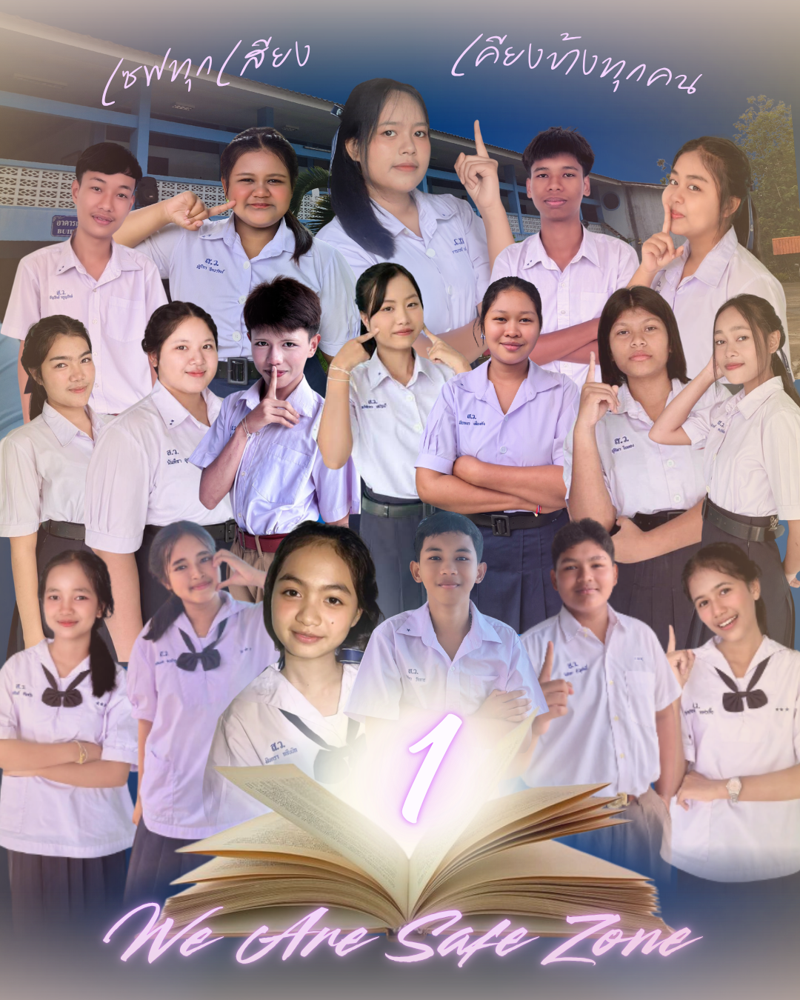

พื้นที่ปลอดภัยที่ไม่มีใครถูกมองข้าม
We Are Safe Zone
“ เซฟทุกเสียง เคียงข้างทุกคน ”
มาร่วมเป็นส่วนหนึ่งในการสร้างสรรค์สังคมและสภานักเรียนที่รับฟังทุกความต้องการอย่างเท่าเทียม พร้อมขับเคลื่อนนโยบายเพื่อประโยชน์และสวัสดิภาพของทุกคนอย่างแท้จริง
